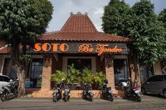

Daftar Wisata Kuliner Kota Depok
Warung Pasta Depok
Suka makan masakan ala Italia khususnya pasta? Kamu wajib datang ke Warung Pasta di Jalan Margonda Raya No 518, Beji. Berbagai masakan khas Italia bisa kamu temukan di tempat wisata kuliner Depok satu ini, mulai dari aneka piza, pasta, calzone, dan sebagainya. Tempatnya pun cukup nyaman untuk nongkrong dengan desain interior yang didominasi dekorasi kayu. Asyiknya lagi, Warung Pasta memiliki jam operasional yang cukup lama, yakni pukul 10:00 – 02:00. Jadi, kamu bisa lebih leluasa makan sambil nongkrong di sini. Tidak perlu khawatir kehabisan tempat duduk karena bangunan Warung Pasta terdiri dari dua lantai.
DetailSoto Bu Tjondro
 Soto Bu Tjondro di Jalan Sersan Anning No 1, Pancoran MAS. Sesuai namanya, tempat makan di Depok satu ini memang menyediakan spesialisasi menu soto ayam dengan kisaran harga mulai dari Rp16.000 hingga Rp29.000
DetailPondok Ikan Bakar
 Meski namanya mengandung kata ikan bakar, tempat makan satu ini juga menawarkan aneka lauk lain seperti udang dan ayam. Ada pula sayuran, seperti tumis kangkung dan lalap rebus untuk mendampingi lauk pesanan kamu.
Meski namanya mengandung kata ikan bakar, tempat makan satu ini juga menawarkan aneka lauk lain seperti udang dan ayam. Ada pula sayuran, seperti tumis kangkung dan lalap rebus untuk mendampingi lauk pesanan kamu.